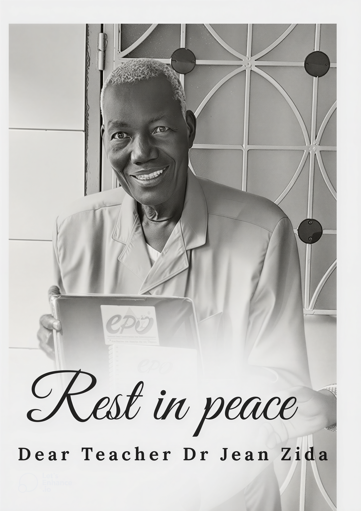

Enseignant · Chercheur · Administrateur
Professeur d'Anglais & Initiateur de la Plateforme
Docteur en langues vivantes, le Dr Jean ZIDA a consacré sa carrière à l'excellence académique et au rayonnement de l'anglais au Burkina Faso. Professeur passionné, administrateur visionnaire et chercheur engagé, il a marqué de son empreinte l'Université Joseph KI-ZERBO et l'École Polytechnique de Ouagadougou.
Une carrière dédiée à l'enseignement et à l'administration universitaire
Le Dr ZIDA a débuté sa carrière en tant que professeur d'anglais au prestigieux Prytanée Militaire du Kadiogo, où il a formé des générations d'élèves officiers à la maîtrise de la langue anglaise.
Il a également enseigné l'anglais dans plusieurs établissements privés du Burkina Faso, contribuant à diffuser l'apprentissage des langues vivantes au-delà du secteur public.
À la Vice-présidence chargée de la Professionnalisation et des Relations Université-Entreprises de l'UJKZ, il a dirigé la formation professionnelle et continue, façonnant des ponts entre le monde académique et le monde de l'emploi.
Il a exercé les fonctions de chef du département des langues vivantes de l'UJKZ, assurant la direction pédagogique et administrative d'un département stratégique.
En tant qu'enseignant responsable de la bibliothèque du département des langues vivantes, il a veillé à l'enrichissement et à la mise à disposition des ressources documentaires pour les étudiants et chercheurs.
Initiatives majeures au service de l'université et de la professionnalisation
Organisation du premier atelier sur les études américaines au sein du département des langues vivantes de l'UJKZ.
Organisation d'un atelier portant sur le développement des curricula universitaires, renforçant la qualité pédagogique.
Organisation des trois premières éditions des Journées Portes Ouvertes des filières professionnalisantes de l'université.
Conception et mise en ligne du répertoire des filières professionnalisantes de l'UJKZ, facilitant l'orientation des étudiants.
Mise en place d'un cadre de concertation entre l'université et le monde de l'emploi pour favoriser l'insertion professionnelle.
Contribution à la mise en ligne d'une base de données des accords et conventions de coopération et des projets du site web de l'UJKZ.
Participation active à la conception et à la mise en place des filières professionnalisantes de l'université Joseph KI-ZERBO.
« L'excellence au service de la Nation passe par la maîtrise des langues. Former des étudiants compétents en anglais, c'est leur ouvrir les portes du monde et préparer le Burkina Faso aux défis de demain. »